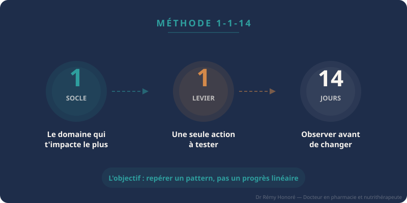
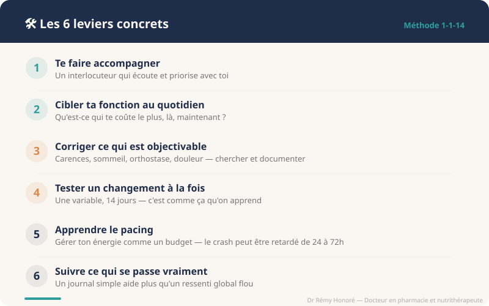

Covid long : que peut-on faire, concrètement ?
Il n'existe pas de bouton OFF. Mais il existe des marges de manœuvre réelles : la méthode 1-1-14 et 6 leviers concrets pour commencer.
Non, il n'existe pas un bouton OFF du Covid long. Pas de protocole unique, pas de molécule miracle, pas de "faites ça pendant 3 semaines et ça ira".
Mais il existe des marges de manœuvre réelles : réduire les crashes, repérer tes déclencheurs, cibler ce qui te coûte le plus, traiter ce qui est traitable — et surtout, arrêter de te disperser dans douze pistes à la fois.
Les recommandations actuelles — OMS, NICE/SIGN/RCGP (guideline NG188), CDC — convergent sur un même message : une approche centrée sur les symptômes, des objectifs réalistes, et l'amélioration de la fonction au quotidien.
Pas la guérison. La fonction.
Cet article développe une méthode simple pour commencer — la méthode 1-1-14 — et détaille six leviers concrets sur lesquels tu peux agir, avec les sources qui les soutiennent.
Le vrai problème : ne plus savoir où agir
Le plus dur, dans le Covid long, ce n'est pas seulement d'avoir beaucoup de symptômes. C'est de ne plus savoir lequel attaquer en premier.
Fatigue invalidante, brouillard mental, intolérance à l'effort, troubles du sommeil, symptômes orthostatiques, douleurs diffuses, troubles digestifs, hypersensibilités… La liste est longue, et elle varie d'une personne à l'autre.
Peut-être que pour toi, c'est l'énergie et les crashes. Peut-être que c'est la station debout, la tachycardie, les malaises. Peut-être le sommeil qui ne récupère plus, le brouillard mental qui rend chaque tâche épuisante, ou la digestion devenue un casse-tête.
Face à cette accumulation, la réaction naturelle est de chercher "le" protocole, "la" solution. Mais la bonne question n'est pas : "Quel est le protocole parfait ?"
C'est : "Quel est MON point de chute principal, là, maintenant ?"
La méthode 1-1-14
C'est un cadre simple pour sortir de la dispersion et commencer à observer ce qui se passe vraiment.
Le domaine qui t'impacte le plus en ce moment.
Une seule action à tester sur ce domaine.
Avant de changer quoi que ce soit d'autre.

Pourquoi 14 jours ?
Parce que 14 jours, ce ne sera pas 14 jours de progrès linéaire. Il y aura des hauts et des bas — c'est la nature même du Covid long, dont les symptômes fluctuent d'un jour à l'autre.
L'objectif n'est pas de "voir du mieux chaque jour". L'objectif est de repérer un pattern : est-ce que la tendance générale bouge ? Est-ce que tu identifies des facteurs aggravants ou protecteurs ? Est-ce que ce levier précis change quelque chose dans ton quotidien ?
Tester un changement à la fois, sur une durée suffisante, c'est la seule façon de savoir ce qui marche vraiment pour toi — pas pour une moyenne statistique, pas pour quelqu'un d'autre sur un forum, pour toi.
Un exemple concret
Sophie, 42 ans, Covid long depuis 14 mois. Ses symptômes principaux : fatigue sévère, crashes post-effort, brouillard mental, sommeil non réparateur. Elle a essayé en même temps : magnésium, CoQ10, vitamine D, arrêt du gluten, yoga doux, et une application de méditation.
Résultat après 2 mois : impossible de savoir ce qui aide, ce qui ne sert à rien, et ce qui aggrave peut-être.
Avec la méthode 1-1-14 : son socle prioritaire, c'est le crash post-effort (c'est ce qui la cloue au lit 2 jours après chaque "bonne journée"). Son levier, c'est le pacing — apprendre à fractionner ses activités et repérer son seuil. Pendant 14 jours, elle ne change rien d'autre. Elle note simplement ses indicateurs chaque jour.
Au bout de 14 jours : elle identifie que ses crashes surviennent systématiquement 36 à 48 heures après les journées où elle dépasse 3 heures d'activité cognitive cumulée. Elle a un pattern. Elle peut ajuster.
Les 6 leviers concrets
Te faire accompagner
D'abord, essaie de ne pas rester seul(e).
Par un professionnel de santé qui connaît le Covid long, ou au minimum qui accepte d'écouter, de prioriser et d'avancer étape par étape. Je sais que c'est souvent un combat en soi — le parcours pour trouver un interlocuteur qui prend la situation au sérieux est parfois aussi épuisant que la maladie elle-même.
Mais un interlocuteur imparfait, s'il écoute vraiment et avance avec toi, vaut souvent mieux que rester seul(e) face à tout ça.
La guideline NICE NG188 insiste sur une prise en charge individualisée, avec décision partagée et orientation selon les besoins. Concrètement, cela signifie que le professionnel devrait travailler avec toi pour hiérarchiser les problèmes, pas dérouler un protocole standardisé.
Cibler ce qui abîme le plus ta fonction au quotidien
Qu'est-ce qui te coûte le plus, là, aujourd'hui ? Le sommeil ? La douleur ? Tenir debout dans une file d'attente ? Perdre le fil d'une conversation au bout de 5 minutes ? Les crashes après une journée "normale" ?
Le CDC recommande explicitement de se concentrer sur les symptômes les plus gênants pour optimiser la fonction et la qualité de vie. Ce n'est pas une approche par défaut — c'est une stratégie.
Et non, traiter un symptôme, ce n'est pas "du symptomatique au rabais". Soulager un symptôme peut stabiliser le terrain et casser un cercle vicieux qui entretient le reste. Un trouble du sommeil non traité aggrave la fatigue, qui aggrave le brouillard mental, qui augmente le stress cognitif, qui déclenche un crash. Casser un maillon de cette chaîne peut avoir des effets en cascade positifs.
Corriger ce qui est objectivable
Certaines choses se cherchent, se dosent, se documentent.
Une carence en fer ou en vitamine D. Un trouble du sommeil identifiable (apnée, syndrome des jambes sans repos). Des vertiges en se levant qui évoquent une intolérance orthostatique. Un problème digestif qui s'aggrave. Une douleur qui traîne. Une pathologie associée non diagnostiquée — thyroïde, diabète, anémie.
Tout ça mérite d'être recherché de façon ciblée et pris en charge quand c'est pertinent. Ce ne sont pas des "solutions au Covid long" — mais des facteurs aggravants qui, une fois corrigés, peuvent permettre au corps de mieux gérer ce qui reste.
Tester un changement à la fois
C'est humain de vouloir tout essayer quand on souffre. Mais empiler d'un coup compléments, routines et restrictions donne une illusion d'action et peu d'apprentissage.
La guideline NICE rappelle explicitement : on ne sait pas encore si les compléments alimentaires et vitamines en vente libre sont utiles, sans effet ou parfois délétères dans le Covid long (NICE NG188, section Management).
Ça ne veut pas dire que tout est inutile. Ça veut dire qu'on manque encore de preuves solides pour généraliser — et que tester une variable à la fois, c'est te donner les moyens de savoir ce qui marche vraiment pour toi.
C'est aussi le cœur de la méthode 1-1-14 : un seul changement, 14 jours d'observation, avant de passer au suivant.
Apprendre le pacing
C'est l'un des leviers les plus utiles quand il existe un malaise post-effort (PEM — Post-Exertional Malaise).
L'idée : gérer ton énergie comme un budget. Pas "en faire le plus possible les bons jours", mais répartir l'effort de façon soutenable, identifier tes limites, fractionner les activités, ménager des marges.
Le crash retardé : pourquoi on ne fait pas le lien
Un point crucial que beaucoup ignorent : le crash post-effort peut être retardé. Il apparaît parfois seulement le lendemain ou le surlendemain — parfois jusqu'à 72 heures après l'effort déclencheur.
Une étude de Chu et al. (2018) sur des patients ME/CFS a montré que 11 % des participants rapportaient un délai systématique d'au moins 24 heures avant l'apparition des symptômes post-effort, et que 84 % enduraient un PEM de 24 heures ou plus. Ces caractéristiques se retrouvent dans le Covid long : Vernon et al. (2023) ont montré que la quasi-totalité des patients Covid long étudiés rapportaient un PEM, avec des profils de déclencheurs très variés.
Et ce n'est pas que l'effort physique. L'effort cognitif, émotionnel, le manque de sommeil, la chaleur, le stress orthostatique — tout cela peut aussi déclencher un crash. C'est pour ça qu'on ne fait pas toujours le lien, et qu'on reproduit le cycle : "bon jour → j'en fais trop → crash 2 jours après".

Le pacing fonctionne-t-il ?
Une étude prospective de Parker et al. (2023) sur un protocole structuré de pacing chez des patients Covid long a montré une réduction significative du nombre d'épisodes de PEM — de 3,4 par semaine en début de protocole à 1,1 après 6 semaines — avec une amélioration de la qualité de vie. Une scoping review de Sanal-Hayes et al. (2023) a confirmé que le pacing est la stratégie de self-management la plus utilisée dans le ME/CFS et le Covid long, tout en soulignant le besoin d'études plus robustes.
L'OMS recommande explicitement l'éducation au repos de qualité, l'identification des déclencheurs, la réduction temporaire d'activité lors d'une rechute, et l'attente de la résolution avant de reprendre le rythme habituel.
Lâcher la comparaison avec "avant"
Et pour que le pacing fonctionne vraiment, il faut aussi lâcher la comparaison avec le rythme d'avant. Beaucoup avaient un niveau de fonctionnement plus élevé avant le Covid long. Aujourd'hui, le corps ne suit plus pareil. Ce n'est pas de la faiblesse. Ce n'est pas "dans la tête".
Accepter ton niveau actuel, ce n'est pas renoncer — c'est le point de départ pour remonter sans te crasher.
Suivre ce qui se passe vraiment
Un journal simple — symptômes, activités, rechutes, facteurs aggravants — aide souvent plus qu'un ressenti global flou.
La guideline NICE et le CDC recommandent tous deux l'utilisation de journaux de suivi pour documenter l'évolution des symptômes et guider la prise en charge. Ce n'est pas un exercice académique : noter ce qui se passe permet de mieux repérer les patterns, d'éviter les faux liens de causalité… et parfois de voir enfin ce qui t'aggrave vraiment.
C'est aussi un outil de communication avec ton praticien. Un ressenti "je vais mal" est légitime mais difficile à exploiter cliniquement. Un relevé de 14 jours montrant que tes crashes surviennent systématiquement après certains types d'effort — ça, c'est actionnable.
En résumé
Il n'y a pas de solution unique. Mais il y a une méthode.
1 socle. 1 levier. 14 jours.

Si tu te reconnais dans cet article, tu n'es pas seul(e). Et tu n'as pas besoin de tout résoudre aujourd'hui.
🧭 Boussole
C'est pour ça que j'ai créé Boussole : un outil gratuit, 100 % privé, sans compte, pour noter tes 4 indicateurs de bien-être chaque jour (énergie, sommeil, confort physique, clarté mentale) et repérer tes patterns sur 30 jours. Un PDF à montrer à ton praticien. Pas un diagnostic. Un point de départ.
Essayer BoussoleSi ton entourage ne comprend pas ce que tu vis, cet article est aussi fait pour être partagé avec eux.
Sources
- NICE/SIGN/RCGP. COVID-19 rapid guideline: managing the long-term effects of COVID-19 (NG188). Dernière mise à jour : janvier 2024. nice.org.uk/guidance/ng188
- OMS. Clinical management of COVID-19: living guideline. 2023. WHO-2019-nCoV-clinical-2023.2
- CDC. Long COVID or Post-COVID Conditions. cdc.gov/covid/long-term-effects
- Chu L et al. Deconstructing post-exertional malaise in myalgic encephalomyelitis/chronic fatigue syndrome: A patient-centered, cross-sectional survey. PLoS One. 2018;13(6):e0197811. PMID 29864164
- Vernon SD et al. Orthostatic challenge causes distinctive symptomatic, hemodynamic and cognitive responses in long COVID and ME/CFS. Front Med. 2023. PMID 36760238
- Parker S et al. A structured pacing programme for post-COVID fatigue. Clin Rehabil. 2023. PMID 36852773
- Sanal-Hayes NEM et al. A scoping review of pacing for management of ME/CFS and long COVID. J Rehabil Med. 2023. PMID 37458261
- Meach R et al. An app to support pacing in ME/CFS and long COVID (PaceMe): qualitative study. JMIR mHealth. 2024. PMID 38231545